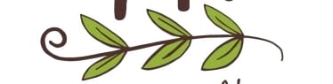

Praia de Pipa · Tibau do Sul
Mais que uma feira,
um movimento.
Pessoas da comunidade se encontram, compartilham saberes e sabores e apoiam quem produz em Pipa.
Conheça a Ecofeira Feita com a comunidade, para a comunidade.
Feita com a comunidade, para a comunidade.
Encontro que transforma
Uma feira que cresce
com a comunidade.
A Ecofeira da Pipa é organizada por quem faz parte dela. É um espaço para pessoas que produzem, criam e compartilham. Aqui, valorizamos a cultura local e apoiamos uma forma mais justa de trabalhar e comprar.
25pessoas na feira hoje
21mulheres participantes
4pessoas indígenas
+60famílias já participaram
Números apresentados no material de divulgação da Ecofeira.
Feito por pessoas daqui
Produtos, sabores
e ideias locais.
Em cada banca, você encontra produtos feitos ou cultivados por pessoas da região.
- Alimentos orgânicos e cultivados com cuidado
- Comidas vegetarianas e veganas
- Opções sem lactose e sem glúten
- Artesanato criado por mulheres
- Plantas, cosméticos naturais e terapias
- Livros e conhecimentos populares


Ecofeira Cultural
Cultura e saberes
de Pipa.
Na feira, há música, teatro, capoeira, zambê, livros e conhecimentos populares. É um espaço para se encontrar, aprender e celebrar.